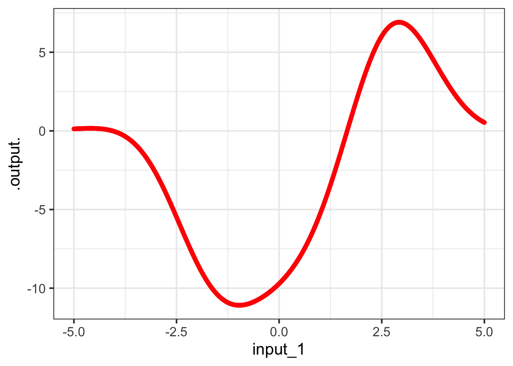

4 Visualizing functions
Most readers will have encounted graphs of functions in high-school or earlier. Figure 4.1 shows an example: a graph of a function named g(). There is only one input to g().
g(), a function with one input.
As you know, humans can use the function graph as a scaffold for an algorithm for finding the output corresponding to any given input. Your skills at this may already be quite strong, but for the sake of completeness I provide this description of the algorithm:
- Find the horizontal location that corresponds to the given input and draw a vertical line through that location.
- Mark the point where the vertical line in (1) intersects the curve.
- Read off the vertical location of the point in (2).
4.1 Drawing function graphs with R/mosaic
In technical vocabulary, the word “graph†refers to the kind of display in Figure 4.13. The word “graphic†is not technical and is more general than graph. A “graphic†is any kind of visual presentation of art or information. This is important to note, since the majority of graphics in this Calculus book will not be “graphs.”
A “graph†is a suitable format for displaying a function with one input. (Remember, all functions in this book will have one output.) In modeling, it’s typical to use functions of multiple inputs. Consequently, graphics involving functions will typically not be “graphs.†But, the reader is undoubted familiar with graphs from high school, so we start there so that we can focus on the computer commands before we introduce other modes.
Active R chunk 4.1 shows an R/mosaic graphics command that produces a graphic showing the graph of a function. (Make sure to press “Run code†to see the graphic.)
You see the typical components of an R/mosaic command: a function name (slice_plot()) followed by a pair of parentheses. Inside the parentheses are two arguments, both of which are required.
- a tilde expression for the function you wish to graph
- the graphical domain to be covered by the horizontal axis
A tilde expression suitable for slice_plot() must have a single input name on the right-hand side (“RHS†for short). The left-hand side (“LHS”) is an expression of the sort you have already used in makeFun().
The second argument to slice_plot() will always be domain() with a named argument matching the name from the tilde expression RHS. The value given for the named argument contains the left- and right-bounds for the horizontal axis.
Remember that a function’s domain is the space of all possible valid inputs to the function. The domain for most of the functions you studied in high school is infinite, for instance extending from \(-\infty\) to \(\infty\). A graphical domain, in contrast, is usually a finite part of the function domain.
The R/mosaic command you will use to graph a mathematical function is slice_plot(). (We will get into the reasons for this name later.) slice_plot() takes two arguments which are, as always, separated by a comma. Here are two examples producing graphs of different functions:
slice_plot(sin(x) ~ x, domain(x = 0 : 5)slice_plot(3 * y + b ~ y, domain(y = -3.5 : 3)
The first argument to slice_plot() tells what function is to be plotted. The argument is a tilde expression of the same sort you saw in Chapter 3.
The second element establishes the graphics domain. It will always be the name domain() with a named argument that matches the name for the input on the RHS of the tilde expression. In (a) the argument name is x while in (b) the argument name is y.
Named arguments always consist of a name followed by an equal sign. After the equal sign comes the value of the argument. In (a), the value is 0 : 5 which means “zero to five.†In (b), the value is -3.5 : 3 standing for “minus three-point-five to three.†Each of these values is written with a colon (:). This is a bit of punctuation meaning “to,†as in “zero to five.”1
4.2 Drawing contour plots of functions
In general, the functions we use in modeling can have multiple inputs. So best not to get to fixated on the format in Active R chunk 4.1. That format is appropriate only for functions that have one input.
Our preferred visual format for a function of two inputs is the “contour plot.†You might be familiar with the idea if you have ever had to use a topographic map for hiking. Here’s an example:
h <- makeFun(3*x - 2*x*y - y^2 ~ x & y)
contour_plot(h(x, y) ~ x & y, domain(x = -1:1, y = 0:2))
The function being plotted is named h(). Since h() takes two inputs, the graphical domain needs to be a space with two dimensions. We signal this by giving two arguments to domain(), one for each dimension of the input space. Of course, the names used within domain() have to match the names used in the tilde expression. Note that we use only one domain() call. It’s the two arguments that establish that the domain will have two dimensions.
4.3 Spaces and graphs of functions
We are going to step back from the instructions for drawing graphics like Figure 4.13 in order to give you a better perspective on the essentials of making graphical displays of functions. This will help in reading and interpreting graphics, especially graphics for functions of multiple inputs such as in Figure 4.2.
As you know, the domain of a function is the set of all possible valid inputs to that function. In Chapter 1 we defined a space to be a set of possibilities. Thus, a function domain can be seen as a space, the “input space†for the function.
In Figure 4.13, the input space is a number line. Each point in the space is a possible input value to the function.
There is also an output space for a function, the set of all possible outputs. Figure 4.4 shows a number line that is the output space for the function graphed in Figure 4.13.
The function itself tells us, for every point in the input space, what is the corresponding point in the output space. Figure 4.5 gives an example. The input and output spaces are shown as number lines, while the function is indicated by the thin colored lines.

For example, the function displayed in Figure 4.5 translates an input value of -4 (see the green line) into an output value of 3.7.
The display in Figure 4.5 is very hard to interpret. Also, to avoid the display being filled up with colored ink, we can show only a few of the input/output pairs.
A function graph (like Figure 4.13) is much easier to read. But let’s be clear about where the spaces are shown. In a function graph, the input space is shown horizontally and the output space is shown vertically as in Figure 4.6.

Now for every point in the input space the function specifies a corresponding point in the output space. We mark the correspondence with a dot. The horizontal coordinate tells us what is the input value. The vertical coordinate tells us what is the corresponding output value. To show the function as a whole—the output corresponding to every input—we would need a lot of dots! So many dots that they collectively give an appearance of a thin curve, the curve seen in Figure 4.13.

4.4 Input and output spaces
This background about spaces is important for understanding functions because, for functions with two or more inputs, the input space and the output space can be depicted in different ways. For example, in the contour plot of Figure 4.2, the input space is the two-dimensional space in the plane of the display (that is, the paper or screen depending on how you are reading this). The output space for the contour plot is depicted using curves, colors, and labels. There is one curve for each output value. Only a handful of output values are shown, but you can get pretty close to estimating the output value even for inputs not on the curve.
The space of all possibilities (y, z, output) is three-dimensional, but very few of those possibilities are consistent with the function to be graphed. You can imagine our putting dots at all of those consistent-with-the-function points, or our drawing lots and lots of continuous curves through those dots, but the cloud of dots forms a surface; a continuous cloud of points floating over the (y, z) input space.
Figure 4.8 displays this surface. Since the image is drawn on a two-dimensional screen, we have to use painters’ techniques of perspective and shading. In the interactive version of the plot, you can move the viewpoint for the image which gives many people a more solid understanding of the surface.
Math textbooks—but not so much this one!—often display functions with two inputs using a three-dimensional space. This space is made by laying the two-dimensional input space on a table, and sticking the one-dimensional output space perpendicular to the table. Each point in the input space has a corresponding value in the output space which could, in principle, be marked with a dot. The whole set of dots, one for each value in the input space, appears as a surface floating over the table.
g(x, y) ~ x & y drawn as a surface. The function output value, for any given \((x, y)\) pair, is the height of the surface above the \((x, y)\)-plane.
A variety of drawing techniques such as transparency, color, and interactive annotation are used to help us perceive a two-dimensional surface embedded in a three-dimensional space. (Place your cursor within the space delimited by the x, y, z axes to see the annotations.)
Pretty as such surfaces are, a contour plot (Figure 4.9) provides a good view of the same function.
4.5 Why “slice_plot()�
Saying “graph†for a display of \(f(x)\) versus \(x\) is correct and reasonable. But in MOSAIC Calculus we have another point to make.
Almost always, when mathematically modeling a real-world situation or phenomenon, we do not try to capture every nuance of every relationship that might exist in the real world. We leave some things out. Such simplifications make modeling problems easier to deal with and encourage us to identify the most important features of the most important relationships.

In this spirit, it is useful always to assume that our models are leaving something out and that a more complete model involves a function with more inputs than the present candidate. The present candidate model should be considered as a slice of a more complete model. Our slice leaves out one or more of the input quantities in a more complete model.
As you become practiced reading contour plots, you might prefer to read this one as a hilltop (shaded yellow) side-by-side with a hollow or bowl (shaded purple), with green, almost level flanks at the left and right edges of the frame.
To illustrate this, suppose that the actual system involves relationships among three quantities, which we represent in the form of a function of two inputs, as shown in Figure 4.10. (The third quantity in the relationship is the output of the function.)
The most common forms of slice involve constructing a simpler function that has one input but not the other. For example, our simpler function might ignore input 22. There are different ways of collapsing the function of two inputs into a function of one input. An especially useful way in calculus is to take the two-input function and set one of the inputs to a constant value.
For instance, suppose we set input 22 to the constant value 1.5. This means that we can consider any value of input 1, but input 2 has been replaced by 1.5. In Figure 4.11, we’ve marked in red the points in the contour plot that give the output of the simplified function.

input_2 is held constant at 1.5.
Each point along the red line corresponds to a specific value of input #1. From the contours, we can read the output corresponding to each of those values of input #1. This relationship, output versus input #1 can be drawn as a mathematical graph (to the right of the contour plot). Study that graph until you can see how the rising and falling parts of the graph correspond to the contours being crossed by the red line.
Slices can be taken in any direction or even along a curved path! The blue line in Figure 4.12 shows the slice constructed by letting input 2 vary and holding input 1 at the constant value 0.

input_1 at zero.
4.6 Drill

For the function in ?fig-drl-reading-graph-1, find the output values for each of these inputs. Your answers will necessarily be approximate, but be as close as feasible.
| Input | Output |
|---|---|
| -1 | |
| 0 | |
| 3 | |
| 5 |
rrr Znotes:::MC_counter$reset(labels="numbers")
slice_plot(sin(2*pi*t/5) ~ t, bounds(t=c(-5.2,5.2))) %>%
gf_refine(scale_x_continuous(breaks = -5:5))4.7 Exercises
rr insert_exercises("Preliminaries", "visualizing functions")
R experts should note that the colon has a different meaning within
domain()than it does generally in R.↩︎